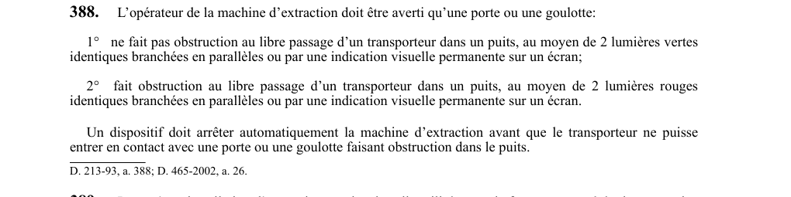

art-388-RSSM : signalisation obstruction porte puits extracteur
Un article du wiki ⚖️ Recueil législatif
Texte de l’article (transcription)
L'opérateur de la machine d'extraction doit être informé par deux lumières vertes en parallèle ou indication visuelle permanente lorsque la voie est libre. Cette obligation vise l'employeur.
- Et par deux lumières rouges en parallèle.
- 2 lumières vertes en parallèle ou indication visuelle permanente (libre passage).
- 2 lumières rouges en parallèle ou indication visuelle permanente (obstruction).
- Arrêt automatique avant contact du transporteur.
🌐 LegisQuébec · 📄 PDF officiel
Texte officiel : capture du PDF

Toucher l'image pour l'agrandir🔗 Voir art. 388 RSSM dans le PDF (page 98)
Version : texte officiel du RSSM (RLRQ c. S-2.1, r. 14), à jour au 1er mai 2024 — Éditeur officiel du Québec
Voir aussi
- art. 386 : écran protecteur accouplement haute pression · obligation : lorsqu'un opérateur travaille à moins de 3 m d'un accouplement ou d'une canalisation dont la pression dépasse 10 000 kPa, ceux-ci doivent être munis d'un écran protecteur non ajouré ; pendant les travaux de fonçage, le boisage doit être maintenu à moins de 15 m du fond du puits.
- art. 387 : cloison compartiment extraction puits · obligation : hors fonçage, tout compartiment d'extraction servant au transport de matériaux doit être protégé par une cloison à l'orifice du puits et à chaque recette, sauf côté chargement/déchargement ; cette cloison doit dépasser le plancher d'au moins la hauteur du transporteur + 2 m.
- art. 389 : cloison protection travailleurs fonçage double · obligation : lorsqu'une installation d'extraction supplémentaire est opérée dans un puits en cours de fonçage, les travailleurs affectés au fonçage doivent être protégés par une cloison divisant les compartiments pour empêcher tout objet de tomber d'un compartiment à l'autre.
- art. 390 : portes sécurité déversement fonçage puits · interdiction : pendant le fonçage d'un puits, la porte de déversement doit empêcher toute chute de roches dans le puits ; au moins une porte de sécurité doit être installée dans tout puits vertical ou incliné à plus de 80° par rapport à l'horizontale, située sous le plancher des recettes.
- ⚖️ Loi habilitante : LSST
- ↑ Index du bloc : Documents et registres
Pages qui pointent ici (5)
- art-386-RSSM : écran protecteur accouplement haute pression Recueil législatif
- art-387-RSSM : cloison compartiment extraction puits Recueil législatif
- art-389-RSSM : cloison protection travailleurs fonçage double Recueil législatif
- art-390-RSSM : portes sécurité déversement fonçage puits Recueil législatif
- RSSM : Documents et registres (art. 380 à 400) Recueil législatif